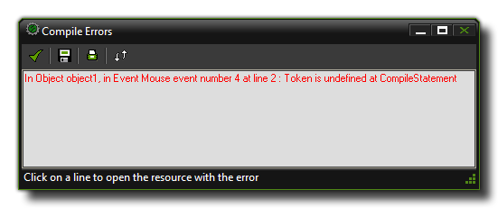

When creating your game it's very easy to forget to declare a variable or mis-type a string as a real etc... These errors will be caught by GameMaker: Studio as the game is being compiled and a window will open with the error given as well as where the error was found as shown in the image below:  You can click any of the lines of text that are shown and you will be taken directly to the object that has thrown the error, and then you can use the information contained within the message to pinpoint exactly where in the object the error has occurred. However, sometimes these errors can seem a bit cryptic, so below you can find a complete list of all errors and a brief explanation of what they mean.
>unknown function or script
You have referenced a function or script that does not exist. This can happen when you mis-type a function or remove a script that is being used in an object from the game.
>Unable to find script
You have referenced a script that can no longer be found in the resources.
>Execute script action is not bound to a script
You have used the "execute script" action on a script that no longer exists.
>Failed to parse action_execute_script() - incorrect number of arguments received
The execute script action has been given the wrong number of arguments for the script
>Trying to set a read only variable
You have tried to assign a value (string or real) to a variable that is flagged as read-only. For example:
phy_com_x = 12;
This would give an error as phy_com_x is read-only.
>Constant is invalid here
You have placed a constant in your code that is not appropriate to the code.
>Malformed repeat statement
>Malformed if statement
>Malformed while statement
>Malformed do statement
>Malformed for statement
>Malformed with statement
>Malformed switch statement
>Malformed break statement
>Malformed continue statement
>Malformed exit statement
>Malformed return statement
The structure of your statement is incorrect. For specific details please see the relevant section here: GML Overview
>Keyword until expected
You have set up a "do... until" loop but failed to supply the "until" part. See GML Overview - Do
>If requires a then statement
You have omitted the then part of an if statement. See: GML Overview: If
>Statement in a switch MUST appear after case or default
You have added a function statement into a switch outside of the cases or default. For example:
switch(id)
{
if x == 12 game_end(); break;
}
>Break used without context
You have added a break into your code where it is not needed or makes no sense to have one.
>Continue used without context
You have added a continue into your code where it is not needed or makes no sense to have one.
>Calling a function that needs an instance and no instance is available
This error will be shown should you be using an instance_* function when no instances exist at the time of running the code.
>Calling a function that needs an \"other\" and no \"other\" is available
You will get this error when using other to reference an instance when that instance no longer exists, for example, in a collision event where you have already destroyed the other instance.
>Argument naming error, {n} arguments but no reference found to {a}
You have supplied a series of arguments to a script, of which one or more does not represent any value.
>Wrong type of arguments for *
>Wrong type of arguments for /
>Wrong type of arguments for div
>Wrong type of arguments for Mod
>Wrong type of arguments for +
>Wrong type of arguments for -
>Wrong type of arguments for &&
>Wrong type of arguments for ||
>Wrong type of arguments for &
>Wrong type of arguments for |
>Wrong type of arguments for ^
>Wrong type of arguments for <<
>Wrong type of arguments for >>
You have supplied an expression with the wrong type of arguments (either real or string). For example if you have something like this:
if "Hello" div 4
{
//do something;
}
you will get this error as you cannot use div on a string. For specific details please see the relevant section here: GML Overview - Expressions
>Division by 0
It is impossible to divide by 0 and so you get this error should a GameMaker: Studio code try to do this.
>Modulo by 0
You get this error should the modulo expression try to use 0 as its operator.
>Cannot compare arguments
this error tells you that one or more expressions are trying to operate on both strings and reals, something that is not permitted. For example:
if "Hello" == 74
{
//do something;
}
This would give the error as you cannot compare the two values in the expression as they are different types.
>Symbol } expected
>Symbol { expected
>Symbol ) expected
>Symbol ( expected
>Symbol: expected
>Symbol , or ) expected
>Symbol , or ] expected
>Symbol ] expected
Your code is missing one of the above symbols from its syntax. This error is normally caught by the code editor and highlighted for you.
>Assignment operator expected
This error will be fired when you have omitted one of the operators from an expression. For example:
if var1 var2 == var3
{
//do something;
}
the above code is missing the operator between "var1" and "var2" and so would give this error, although normally this would be caught by the code editor before being compiled.
>Unexpected symbol in expression
You have a symbol (like /, *, +, etc...) in the wrong place within the expression. This should normally be caught by the code editor syntax checker
>Only 1 or 2 dimensional arrays are supported
GameMaker: Studio only permits 1 or 2 dimension arrays and should you try to create any that are larger then you will get this error. For more information please see: GML Overview - Arrays
>Variable name expected
You have written an expression that expects a variable to be used when none has been supplied. For example:
if obj_Control. = "Hello"
{
//do something;
}
Since there is no variable after the assignment ".", you would get this error.